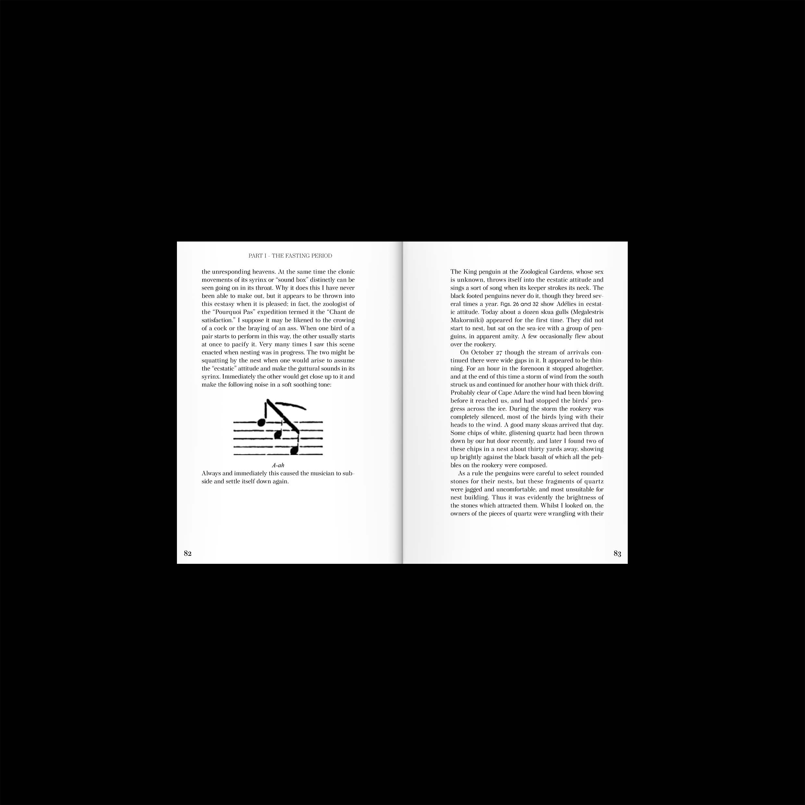
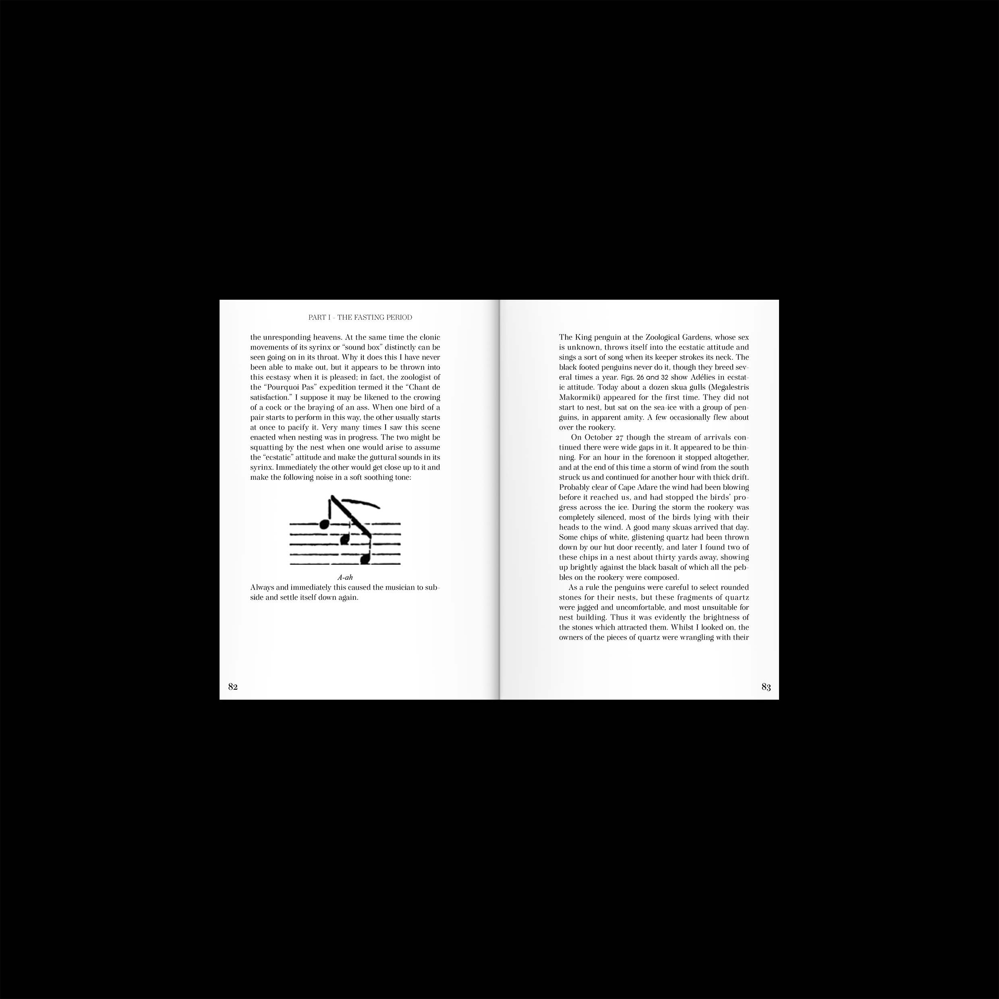

THE LIFE OF MARGINALITY [Wall newspaper]


Space of Radical Openness" by Bell Hooks. Sublimation-printed on textile.
THE LIFE OF MARGINALITY [Wall newspaper]
WE LIVE IN A RAINBOW OF CHAOS [Album cover design]


Antartic Penguins[Book]


 

FRAGMENTS OF OBSCURITY [Video]
Jangseungpo Regional Activation Project[Illustration]


Like the Cosmos in the Dirt [Video/Book]


Astro Regular [Typeface Design]


Sing with a Mask on[Music&Lyrics sheet design]